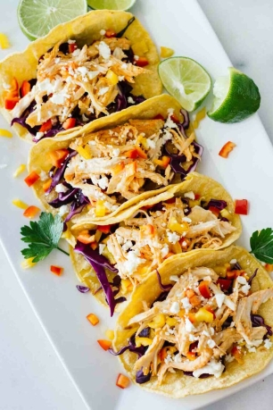

Sriracha Shredded Chicken Tacos
Gluten-Free

Cuisine: Mexican
Cook Time: 30 Minutes
Serving Size: 6 Tacos
Calories: 128 cal
Author: Christine McMichael
Ingredients
2 thinly sliced chicken breasts
2 Tbsp Sriracha
6 corn tortillas
1 cup chopped red cabbage
1/2 cup chopped peppers
1/4 cup feta cheese
1 lime
Instructions
1. Preheat oven to 375 degrees.
2. Place the chicken breasts on a baking sheet and top with Sriracha. Bake for 30 minutes (or until they're fully cooked).
3. While the chicken is baking, heat the tortillas up (optional).
4. Top each tortilla with chopped red cabbage and chopped peppers.
5. When the chicken has finished baking, shred it and place in the tortillas.
6. Top each taco with feta cheese and a drizzle of lime.